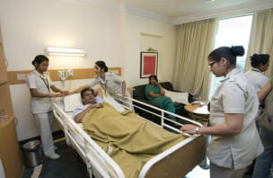

किस तरह उच्च रक्तचाप से छुटकारा पाकर एक बुजुर्ग व्यक्ति की तरह मैं सक्रिय जीवन में वापस लौट पाया - उच्च रक्तचाप से पीड़ित एक रोगी का अनुभव
दीपक कुलश्रेष्ठ, उम्र 67 साल, पेंशनभोगीसभी को नमस्कार! आप यकीन करें या न करें, पर बस एक साल पहले ही डॉक्टरों ने मुझे किसी भी तरह के व्यायाम से बचने और हर समय पूरा आराम करने की सलाह दी थी। छोटे से छोटा तनाव भी उच्च रक्तचाप जनित संकट का कारण बन सकता था। आज मैं पूरी तरह से ऊर्जा से भरपूर और सक्रिय हूँ, जैसे मैं फिर जवान हो गया हूँ। उस उत्पाद की बदौलत यह संभव है, जिसने मुझे वापस अपने पैरों पर खड़ा कर दिया, और वापस ज़िंदगी जी पाने में मदद की। उच्च रक्तचाप से छुटकारा पाने का राज़ मैं आप सभी के साथ साझा करना चाहता हूँ।
कई साल पहले, मेरे सबसे बड़े बेटे की पत्नी ने तीन बच्चों को एक साथ जन्म दिया था। उस युवा परिवार को मदद की ज़रूरत थी - और हमने सुझाव दिया कि हम उनके साथ रहने के लिए आ सकते हैं। वे खुशी-खुशी राज़ी हो गए। शुरू में सब कुछ बहुत बढ़िया था। पर फिर बेटे की नौकरी छूट गई और उसने छोटे-मोटे काम करना शुरू कर दिया। पारिवारिक बैठक में हमने तय किया कि उसकी पत्नी काम शुरू कर दे और हम, दादा-दादी बच्चों की देखभाल कर लेंगे। पर ज़िंदगी हमारी योजनाओं के मुताबिक नहीं चली...
अधिक तनाव से मेरा सामान्य स्वास्थ्य खराब हो गया - दिल में झनझनाहट, साँस लेने में तकलीफ, उच्च रक्तचाप और बढ़ी हुई हृदय गति। डॉक्टरों ने मुझे उच्च रक्तचाप और एथेरोस्क्लेरोसिस की शिकायत बताई, और ढेरों दवाइयाँ लिख दीं। बताई गई दवाओं की जगह दवा की दुकानों ने मुझे विदेशी एनालॉग का प्रस्ताव दिया, पर उनसे मुझे कोई मदद नहीं मिली, बल्कि खर्चे बढ़ गए।
2 महीनों में ही मैंने काफी पैसे खर्च कर दिए, पर कोई फायदा नहीं हुआ। मेरी पत्नी को मुझे अकेला छोड़ने में डर लगने लगा था, इसलिए वह बच्चों के मामले में मदद नहीं कर पाती थी। तभी मेरा एक पुराना दोस्त, जो घाव विशेषज्ञ है, मुझसे मिलने आया। मुझे देखकर उसने मुँह से आवाज़ निकाली और मुझे बूढ़ा बेवकूफ़ बताया। मुझे फार्मेसी के व्यवसाय पर एक भाषण सुनना पड़ा। वह एक बड़े माफिया की तरह है! जब व्यक्ति निर्धारित दवाएँ लेना बंद कर देता है, लक्षण वापस आने लगते हैं, और मरीज़ को नया कोर्स लेना पड़ता है। यह फिर पूरी ज़िंदगी के लिए एक दुष्चक्र की तरह हो जाता है। पर मुख्य बात यह है कि अच्छे स्वास्थ्य के लिए आपको जो कुछ भी चाहिए वह प्रकृति की देन है।
मेरी चिकित्सा रिपोर्ट को देखने के बाद, मेरे दोस्त ने मुझे 2 विकल्पों में से एक को चुनने को कहा:
- हर्बल औषधि: इसके लिए मुझे विभिन्न जड़ी-बूटियाँ जमा करके उनका पेय तैयार करना होगा, और उसे सावधानी पूर्वक उचित समय पर पीना होगा।
- कैप्सूल, उपयोग के लिए तैयार: इनमें ज़रूरी मात्रा में हर्बल सत शामिल हैं।

पहला विकल्प रद्द कर दिया गया - चंचल बच्चे निश्चित रूप से पेय को उलट देंगे, औषधि फैला देंगे या उसमें कुछ और जोड़ देंगे। मेरे लिए एकमात्र विकल्प था - मेरे दोस्त ने इसे इंटरनेट पर ऑर्डर कर दिया। उसने बताया कि दवा की दुकानें इसे नहीं बेचती हैं क्योंकि उनके लिए ऐसे उत्पादों को बेचना लाभकारी नहीं, जो असल में मदद करते हैं - इनमें उनके लाभ का काफी नुकसान होता है। इसलिए वे को अपनी दुकानों में आने नहीं देना चाहते।
पैकेट तीन दिन में ही मुझ तक पहुँच गया। निर्देशों के अनुसार के फॉर्मूला में अर्जुन (कुकुभ) और मोरिंगा के सत होते हैं। ये घटक रक्तचाप कम करते हैं, कॉलेस्ट्रोल का स्तर घटाते हैं और हृदय की कार्य प्रणाली में सुधार करते हैं और उसकी अवस्था को सही बनाए रखते हैं। एक व्यक्ति को दिन में 2 कैप्सूल भोजन के बाद लेने चाहिए। नियमित रूप से लेने पर, यह दिल के दौरे, स्ट्रोक और एथेरोस्क्लेरोसिस के जोखिम को कम करता है।
कैप्सूल लेना शुरू करने के कुछ ही दिनों में, मेरा रक्तचाप सामान्य स्तर पर आ गया वह भी बिना किसी दवा के, यह कई महीनों में पहली बार हुआ था! मुझे यह याद भी नहीं था कि मैंने आखिरी बार कब इतना अच्छा महसूस किया था - कानों में बिना किसी सनसनाहट के, दिल की धड़कन तेज़ हुए बिना, और सिरदर्द व सीने में दर्द के बिना। हर दिन, मैं बेहतर से बेहतर महसूस करने लगा।
उस दिन से, मैं घर के काम ठीक से करने लगा और अपने पोते-पोतियों के साथ देर तक चलना संभव हो पाया। हाल ही में, मैंने एक नए गज़ीबो को बनाकर पूरा किया है, जहाँ हम पारंपरिक पारिवारिक चाय पार्टी करेंगे और एक साथ समय बिताएँगे। अब, मैं अपने पोते-पोतियों को बाइक और स्कूटर चलाना सिखाता हूं। कुछ हफ़्ते पहले, मैंने अपने जीवन में पहली बार रोलर स्केट्स आज़माए! अब, मैं और मेरे पोते-पोतियां पार्क में जाते हैं। अतीत में, मैं इतना सक्रिय होने के बारे में सपने में भी नहीं सोच सकता था।
का पहला कोर्स पूरा होने के बाद , मैंने दुबारा अपनी जाँच करवाई। काश आपने पहले और बाद के मेरे परिणामों की तुलना करते हुए विशेषज्ञों के चेहरों की प्रतिक्रिया देखी होती: उच्च रक्तचाप नहीं, एथेरोस्क्लेरोसिस नहीं, एक पूरी तरह से स्वस्थ हृदय और स्पष्ट रक्त वाहिकाएं। अब, मेरा जीवन काफी सक्रिय है और मैं अपने पोते-पोतियों और परिवार के अन्य सदस्यों के जीवन से एक दिन के लिए भी अलग नहीं होता। मैं अपने बेटे को उसका घर बनाने में मदद करने की योजना बना रहा हूं - उसकी पत्नी फिर से गर्भवती है, और वे जुड़वाँ बच्चों का इंतज़ार कर रहे हैं। एक बड़े आरामदायक घर के बारे में विचार करने का समय आ गया है!
मैं आपको यह कहानी क्यों सुना रहा हूँ? क्योंकि मुझे पता है कि कितने लोग उच्च रक्तचाप से पीड़ित हैं। उन सभी को, मेरी तरह ही, बेकार, अप्रभावी और महंगे समाधान बताए जाते हैं। लेकिन अब मुझे पता है कि उच्च रक्तचाप और एथेरोस्क्लेरोसिस से छुटकारा पाने और सामान्य स्वास्थ्य में सुधार करने के लिए एक सरल और किफायती तरीका है - कैप्सूल। आप इन्हें सीधे निर्माता से मंगवा सकते हैं। बस नीचे दिए बटन को दबाएं और आप निर्माता की वेबसाइट पर पहुँच जाएंगे। आपको बस ऑर्डर का फॉर्म भरना है। वैसे, अभी एक विशेष ऑफ़र चल रहा है - पर 50% की छूट है।
अपने स्वास्थ्य के बारे में मत भूलिए, लीजिए। ये कैप्सूल उच्च रक्तचाप, एथेरोस्क्लेरोसिस और अन्य हृदय प्रणाली की समस्याओं को रोकने और उनसे छुटकारा पाने के लिए उपयुक्त हैं। लक्षणों के इतना बढ़ने का इंतज़ार मत कीजिए कि आपको पूर्ण जीवन जीने में बाधा आए - अपने स्वास्थ्य का ख्याल रखें और किसी भी उम्र में सक्रिय पूर्ण जीवन जिएं।
मैं कैप्सूल के बारे में समीक्षा लिखान चाहती हूँ। मेरे पति 7 साल से उच्च रक्तचाप की समस्या से पीड़ित थे, उन्हें दिल का दौरा पड़ा था, पर बच गए। और डॉक्टरों ने उन्हें पूरा आराम करने की सलाह दी, उन्हें किसी भी तरह के तनाव का अनुभव नहीं होना चाहिए। उन्होंने अपने स्वास्थ्य की देखभाल स्वयं करने का निर्णय लिया और अपने मित्र की सिफारिश पर का ऑर्डर कर दिया। इसके बारे में मुझे उन्होंने एक महीने बाद बताया, जब हम उनके डॉक्टर से मिलने गए। डॉक्टरों ने उनके स्वास्थ्य में सुधार की पुष्टि की, उनके परीक्षण के परिणाम बेहतर थे। इसके अलावा, हाल ही में, उनकी बहन को कैंसर का पता चला था, मुझे लगा कि उन्हें दूसरा दिल का दौरा पड़ सकता है और या रक्तचाप बढ़ सकता है, लेकिन सब ठीक ही रहा। वह अपनी बहन की मदद करते हैं, डॉक्टरों की तलाश करते हैं और उसके लिए दवाएं खरीदते हैं। वह बहुत अच्छा महसूस कर रहे हैं, और उनकी बहन के स्वास्थ्य में भी धीरे-धीरे सुधार हो रहा है। मैं बस उन दोनों के लिए खुश हूँ, और पति के लिए घातक एक और तनावपूर्ण स्थिति से डर अब बंद हो गया है।
बहुत जानकारीपूर्ण और रोचक है। मेरे माता-पिता को रक्तचाप की समस्या है, और मेरे पिता को रोगधलन की पूर्व स्थिति है। मैंने उनके लिए छूट पर का ऑर्डर कर दिया है, देखते हैं इसका कैसा असर होता है।
मेरे डॉक्टर ने मुझे अपने दिल और रक्तचाप का ध्यान रखने की कड़ी चेतावनी दी थी, क्योंकि मेरे परिवार के सभी सदस्यों को रक्तचाप और दिल के स्वास्थ्य से जुड़ी समस्याएँ हैं। मुझे लगता है कि मैं से शुरू कर सकती हूँ, यह एक प्राकृतिक उत्पाद हैं। उम्मीद है मेरे लिए भी ये उचित होंगे।
मैंने के बारे में बहुत पहले सुना था, पर मुझे ये कैप्सूल कहीं मिले ही नहीं। और ऐसे ही किसी भी वेबसाइट से इनका ऑर्डर करना मुझे ठीक नहीं लग रहा था। अब मैंने ऑर्डर कर दिए हैं। उनके मिलने का इंतज़ार है।
मैं अभी के बारे में ज़्यादा बात नहीं कर सकता, बस पिछले पाँच दिनों से ही ये कैप्सूल ले रहा हूँ। पर बेशक मैं बेहतर महसूस कर रहा हूँ, मेरा रक्तचाप अपने आप कम हो जाता है, बिना किसी तरह की दवाओं के, मेरे दिल की धड़कनें बढ़ती नहीं हैं, और सीने में दर्द अब नहीं है। अभी तक तो मैं इसके परिणामों से खुश हूँ, सकारात्मक बदलाव दिख रहे हैं।
मैंने अपने पिता और दादा के लिए का ऑर्डर किया है। मेरे दादा जी को काफी समय से उच्च रक्तचाप की शिकायत है, और इसकी रोकथाम का इलाज़ मेरे पिता के लिए भी ठीक रहेगा।
मैंने समय पर ही आपका लेख देख लिया, अभी मुझे इस विषय में दिलचस्पी है। मेरे डॉक्टर्स ने मेरे मामले में हाथ खड़े कर लिए हैं, हालांकि उन्होंने फिर भी मुझे ढेरों दवाएँ लिख दी हैं - पर उनके बहुत साइड इफेक्ट हैं। मुझे तेज़ पेट दर्द होता है, नींद गड़बड़ा गई है। सुबह के समय मेरे शरीर में ऊर्जा बिलकुल नहीं होती है, खुमारी सी लगती रहती है। मैं बस 35 साल का हूँ...
मेरी माँ ये कैप्सूल लेती हैं, उनके स्वास्थ्य में काफी सुधार आ गया है। वह उच्च रक्तचाप के बारे में तो भूल ही गई हैं। वह तो योगा की क्लास में भी जाती हैं,डांस करती हैं, उनका एक दोस्त भी है। मैं भी उनके लिए बहुत खुश हूँ! पता है तलाक के बाद वह कई सालों तक बाहर ही नहीं निकलती थीं।
हाँ, बेशक। ऑर्डर करते समय मैंने इस बारे में पूछा था। उन्होंने बताया कि रोकथाम के उद्देश्य से भी इन्हें लिया जा सकता है। और हाँ, इन कैप्सूल का हृदय प्रणाली पर अच्छा असर होता है, इसीलिए खास तौर पर बुजुर्गों के लिए और जिन्हें उच्च रक्तचाप होने की संभावना हो, उनके लिए ये बहुत अच्छे हैं।
यह उत्पाद सच में अच्छा है , मुझे पसंद आया। मैंने पहले भी कुछ हर्ब्स ली थीं, उनसे मदद भी मिली। पर मुझे उनकी औषधि अक्सर तैयार करनी पड़ती थी, और उसे अधिक मात्रा में लेना पड़ता था। उतना पीना मेरे लिए संभव नहीं हो पाता था। यह बहुत ही सुविधाजनक है - बस एक कैप्सूल लो, यह परवाह करने की ज़रूरत नहीं कि कितनी मात्रा में औषधि लो। मेरा आम स्वास्थ्य काफी सुधर गया है और रक्तचाप कम करने की चिंता भी नहीं रही है।
मैं यह पुष्टि कर सकता हूँ कि कारगर है। अब मेरा रक्तचाप इतना रहता है, पर पहले यह 200 के पार चला जाता था।
क्या सच में उन्होंने उच्च रक्तचाप के लिए बढ़िया समाधान खोज लिया है, जिसका कोई साइड इफेक्ट भी न हो? दवा की दुकानों में मिलने वाली आम दवाओं से मेरा रक्तचाप तो तुरंत कम हो जाता था, पर उन्हें लेने के बाद मुँह सूखने लगता था, चक्कर आते थे, और जैसे शरीर में जान ही नहीं बचती थी। मैं ज़रूर आज़माऊँगी, मैंने ऑर्डर भी कर दी है।

यह एक बहुत अच्छा उत्पाद है, इसने मेरी माँ को 2 सप्ताह के भीतर अपने पैरों पर खड़ा कर दिया। आप देखिए, उसने कई वर्षों तक नियमित उत्पादों की मदद से समस्या को हल करने की बहुत कोशिश की, पर उनका असर लंबे समय तक नहीं रहता, कुछ महीनों के अंदर ही लक्षण वापस आ जाते हैं... बहुत अच्छा है कि हमें मिल गई, अब मेरी माँ स्वस्थ हैं!
मुझे यह जानकर खुशी है कि वे अब पैसे के बारे में नहीं, बल्कि आम लोगों के स्वास्थ्य के बारे में भी सोच रहे हैं। वे अब कुछ उपयोगी काम कर रहे हैं! इतने अच्छे और प्रभावी समाधान के लिए धन्यवाद ।